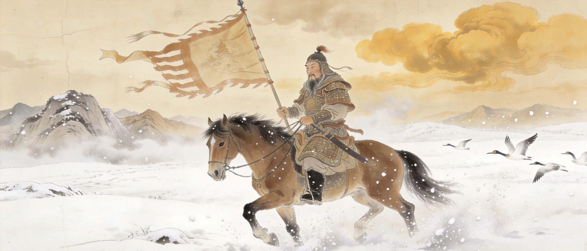
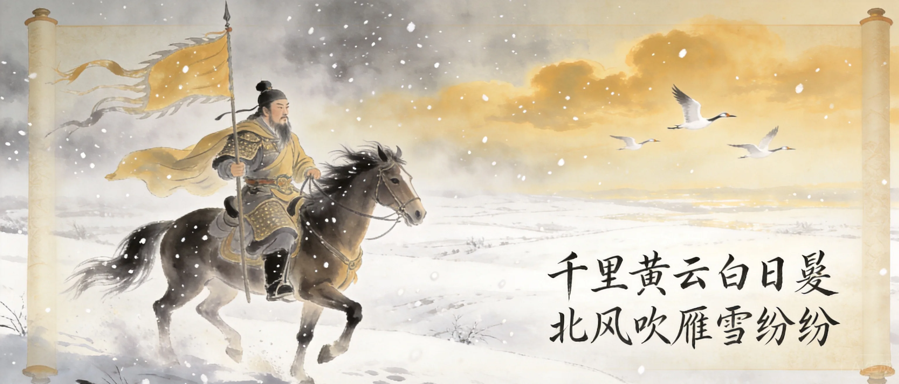
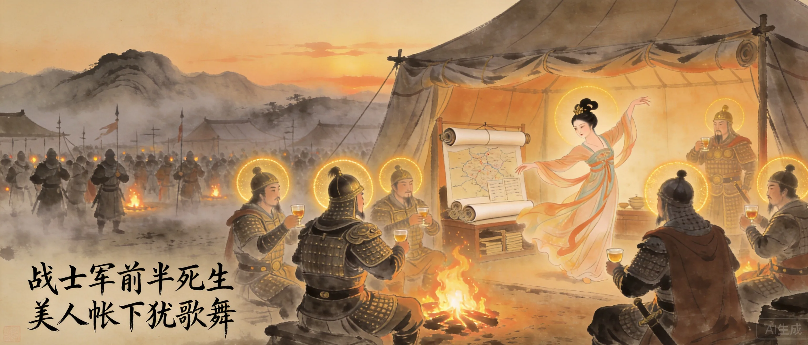
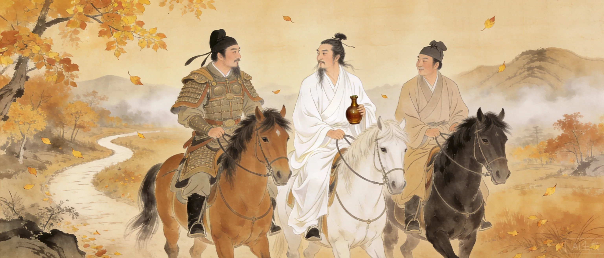
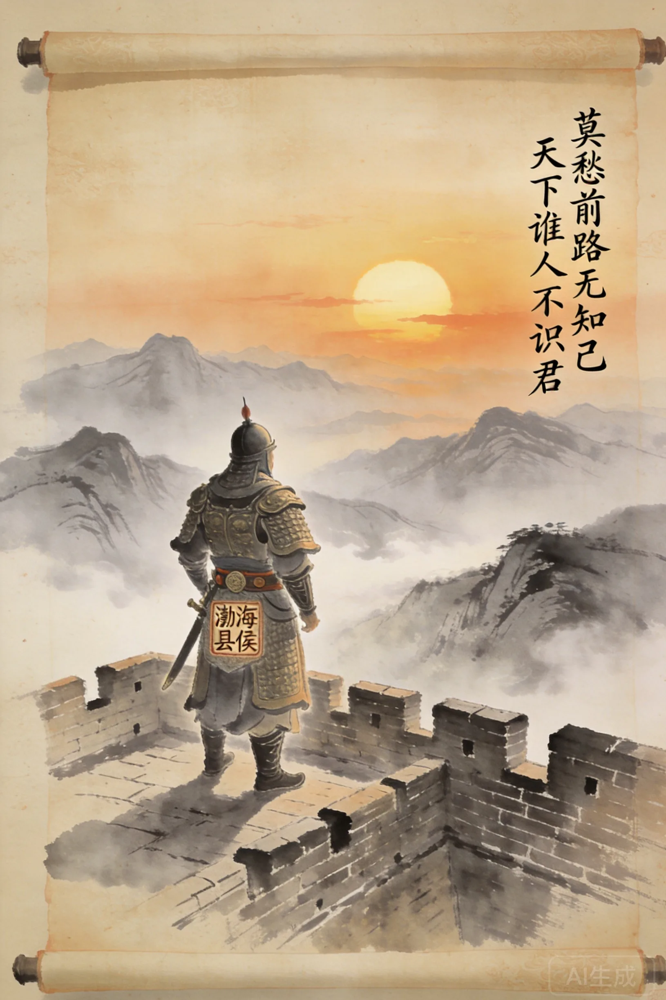

字达夫。早年家贫，客游梁宋，以农耕乞讨为生。
年过三十应试不第。结交李白、杜甫。
年近五十方专注诗歌，几年内名动天下。
入河西节度使幕府，经历边塞军旅。
安史之乱中随玄宗入蜀，拜谏议大夫。
先后出任淮南、剑南节度使，封渤海县侯。
卒年六十一。诗人中仕途最显赫者。


高适的人生是唐代诗人中最大的逆袭。前半生潦倒——客游梁宋、农耕乞讨、年近五十始学诗。但几年内便名动天下，以边塞诗奠定地位。安史之乱中他抓住机遇，先后出任节度使，封渤海县侯。《旧唐书》评价：「有唐以来，诗人之达者，唯适而已。」
**从《别董大》开始读。** 「莫愁前路无知己，天下谁人不识君」——这是对一个失意的朋友说的，但你读起来会觉得是在对自己说的。高适不写软弱的慰藉。他写的东西像是剑——简短、锋利、不拖泥带水。然后读《燕歌行》，你会发现他送给朋友的东西和他送给战争的东西是同一种质地。
高适前半生潦倒至极，最终成为诗人中仕途最显赫者。
早年与李白、杜甫同游梁宋。安史之乱后因政治立场不同而疏远。
不是书斋中的想象。入哥舒翰幕府后，诗有了真正的铁血质感。
高适是唐代诗人中极少数真正上过战场的人。他入哥舒翰幕府，在河西走廊生活多年。所以「战士军前半死生，美人帐下犹歌舞」不是道德批判，是亲眼所见后的沉默陈述。中国边塞诗两种传统：一种是王昌龄式的历史悲慨，一种是高适式的血肉纪实。前者让你心颤，后者让你不敢再轻言战争。
一块被命运反复锻打的铁。高适半辈子都在泥里——种过地、讨过饭、五十岁才开始认真写诗。但锻打没有毁掉他，反而锻造出了唐代诗人中最硬的骨头。他是唯一封侯的诗人——不是因为运气好，是因为他有战场上活下来的韧性。其他诗人活在诗里，高适是极少数先活过了生活再写诗的人。

早年同游梁宋。永王事件后反目。
早年同游梁宋。高适镇蜀时曾接济贫困中的杜甫。
河西节度使。高适入其幕府开始军事生涯。
高适生活的年代，欧洲正处于黑暗中世纪早期。阿拉伯帝国达到极盛，撒马尔罕和巴格达是世界最繁华的城市。南美的玛雅文明正处于古典期高峰。世界的几大文明在八世纪同时绽放。
高适与岑参并称「高岑」，是盛唐边塞诗的双璧。《旧唐书》评价：「有唐以来，诗人之达者，唯适而已。」他的边塞诗不是文人的想象——是亲自在河西走廊的烽燧里写的。后世所有写边塞的诗人，都在高适铺好的辕门前下马。
